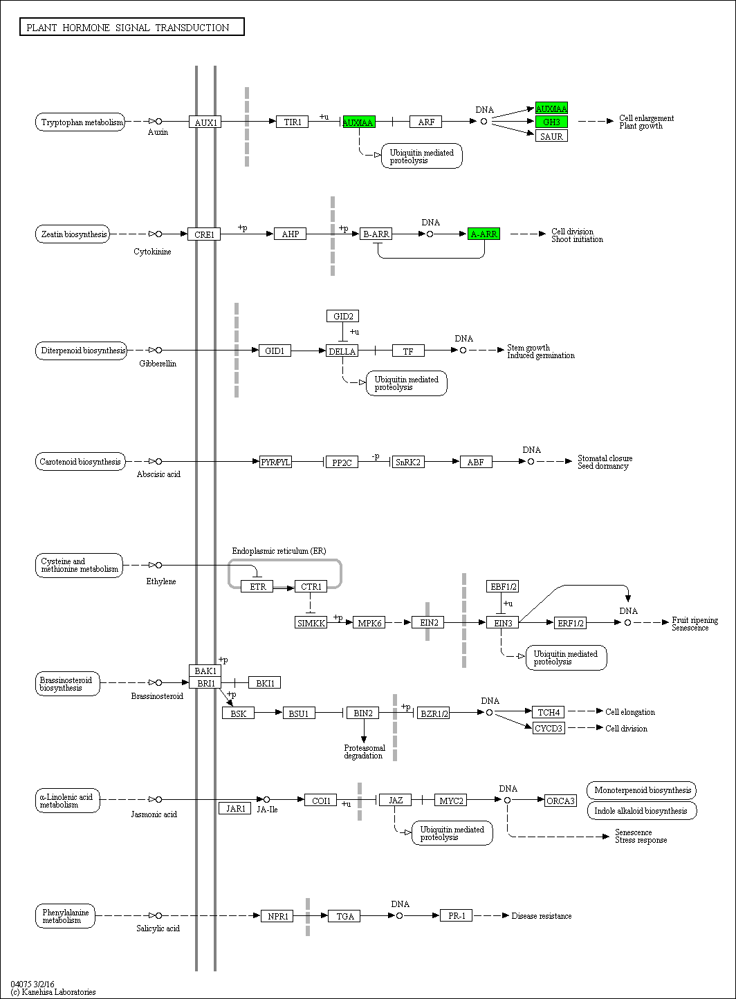

Plant hormone signal transduction - Oryza sativa japonica (Japanese rice) (RefSeq)
[
Pathway menu
|
Organism menu
|
Pathway entry
|
Download KGML
|
User data mapping
]
Reference pathway
Reference pathway (KO)
-----< Set personalized menu >-----
-----< Sort below by alphabet >-----
Arabidopsis thaliana (thale cress)
Ricinus communis (castor bean)
Populus trichocarpa (black cottonwood)
Vitis vinifera (wine grape)
Oryza sativa japonica (Japanese rice) (RefSeq)
Sorghum bicolor (sorghum)
Zea mays (maize)
Physcomitrella patens subsp. patens
Chlamydomonas reinhardtii
Volvox carteri f. nagariensis
Ostreococcus lucimarinus
Ostreococcus tauri
184%
150%
122%
100%
82%
67%
55%

 Plant hormone signal transduction - Oryza sativa japonica (Japanese rice) (RefSeq)
Plant hormone signal transduction - Oryza sativa japonica (Japanese rice) (RefSeq)
 Plant hormone signal transduction - Oryza sativa japonica (Japanese rice) (RefSeq)
Plant hormone signal transduction - Oryza sativa japonica (Japanese rice) (RefSeq)